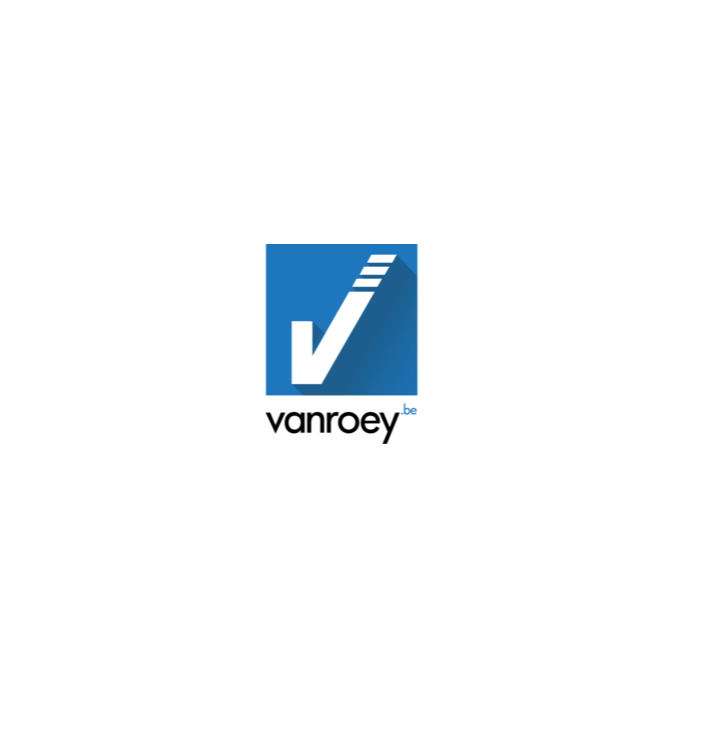

Mails + StageOvereenkomst
Persoonlijke gesprekken tussen leerling en stagebedrijf.

Joren De Rijk
Skaen Beste
Mijn naam is Joren De Rijk, leerling in het laatste jaar van het secundair onderwijs, It en Netwerkbeheer.
In opdracht van onze school, Immaculata Malle, ben ik op zoek naar een stageplaats voor de periode van 30 september t.e.m. 4 oktober 2019.
Aangezien uw bedrijf een zeer goede service biedt aan zijn klanten en de branche aansluit bij mijn studies en interesses, zou ik u willen vragen of de mogelijheid bestaat bij u stage te komen lopen.
Bij eventuele vragen, kan u mij altijd contacteren via mail of bijgevoegd gsmnummer.
Hopende op een positief antwoord, groet ik u vriendelijk.
Beste
Mijn naam is Joren De Rijk, leerling in het laatste jaar van het secundair onderwijs, It en Netwerkbeheer.
In opdracht van onze school, Immaculata Malle, ben ik op zoek naar een stageplaats voor de periode van 30 september t.e.m. 4 oktober 2019.
Aangezien uw bedrijf een zeer goede service biedt aan zijn klanten en de branche aansluit bij mijn studies en interesses, zou ik u willen vragen of de mogelijheid bestaat bij u stage te komen lopen.
Bij eventuele vragen, kan u mij altijd contacteren via mail of bijgevoegd gsmnummer.
Hopende op een positief antwoord, groet ik u vriendelijk.  Beste Joren, Allereerst bedankt voor jouw mail.
Past het voor jou om eens kort tot hier te komen of te bellen met elkaar om te zien wat jouw verwachtingen zijn naar een stage toe etc? Zoja: wanneer lukt dit voor jou? Dan bekijk ik dit met mijn agenda. Alvast bedankt en nog een fijne dag! MvG Inne Loos
Beste Joren, Allereerst bedankt voor jouw mail.
Past het voor jou om eens kort tot hier te komen of te bellen met elkaar om te zien wat jouw verwachtingen zijn naar een stage toe etc? Zoja: wanneer lukt dit voor jou? Dan bekijk ik dit met mijn agenda. Alvast bedankt en nog een fijne dag! MvG Inne Loos

Inne Loos
VanRoey AutomationJoren De Rijk
Skaen Beste Bedankt voor de reactie op mijn vraag, zou het eventueel mogelijk zijn om morgen 11/09 rond 16uur even te bellen?
Dag Joren, Dat is goed voor mij. Ik zal het inplannen en dan horen we elkaar morgen. Gr Inne
Inne Loos
VanRoey AutomationHierna werd er een telefonisch gesprek afgelegd, hier werden de mogelijkheden en aanhangende afspraken afgesproken. Ook werd de stageovereenkomst getekend en doorgestuurd.